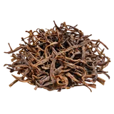

होम / सांगरी

सांगरी का भाव आज | Desert Bean Pods Rate Today
आजकल सांगरी के भाव चल रहे हैं। यह शहर और थोक बाज़ार का भाव है, किसी मंडी की नीलामी का रिकॉर्ड नहीं।
नीचे दिए गए शहरों में सांगरी के आजकल चल रहे भाव दिए हैं। यह शहर और थोक बाज़ार का भाव है, किसी मंडी की नीलामी का रिकॉर्ड नहीं।
सांगरी के भाव आज: राजस्थान में सांगरी का मंडी भाव, खेजड़ी की सांगरी, सूखी सांगरी और पूरी जानकारी
राम राम किसान भाइयों! सांगरी के भाव आज कितने हैं? राजस्थान में सांगरी का मंडी भाव क्या चल रहा है? सूखी सांगरी और हरी सांगरी में कितना अंतर है? सांगरी किस पेड़ पर लगती है और केर-सांगरी कैसे बनती है? अगर आप इन सवालों के जवाब खोज रहे हैं, तो इस पेज पर उपलब्ध सत्यापित मंडी रिकॉर्ड, उनकी तारीख और इकाई के साथ सांगरी के भाव देखे जा सकते हैं। साथ ही खेजड़ी की सांगरी, सूखी सांगरी, तुड़ाई, सुखाने का तरीका, उपयोग, बाज़ार की माँग और भाव में तेजी-मंदी के कारणों की पूरी जानकारी इस लेख में मिलेगी।
थार के कल्पवृक्ष यानी खेजड़ी की फली सांगरी राजस्थान की पहचान है। इसे कई लोग रेगिस्तान का हरा सोना भी कहते हैं। यह सिर्फ़ एक वनोपज नहीं, बल्कि पश्चिमी राजस्थान के किसानों और ग्रामीणों के लिए नकद आमदनी का मज़बूत ज़रिया है। पौष्टिकता, स्वाद और लंबे समय तक सुरक्षित रहने की खासियत के कारण सूखी सांगरी की माँग सीज़न के बाद भी बनी रहती है। राजस्थान की मशहूर केर-सांगरी और पंचकूट सब्ज़ी की मुख्य सामग्री होने के कारण घरेलू मंडियों से लेकर बाहर के बाज़ारों तक इसकी अलग पहचान है।
सांगरी क्या है? खेजड़ी की फली की पहचान
सांगरी खेजड़ी के पेड़ पर लगने वाली लंबी और पतली फली है। इसे मरुस्थल की फली भी कहा जाता है। कच्ची अवस्था में फली हरे रंग की होती है और पकने पर भूरे रंग की हो जाती है। खेजड़ी की कच्ची, कोमल फलियों को ही सांगरी कहा जाता है। इन्हें तोड़कर ताज़ा सब्ज़ी के रूप में इस्तेमाल किया जाता है और सुखाकर लंबे समय तक भी रखा जाता है। राजस्थान पर्यटन और वन विभाग की सामग्री में भी सांगरी का उल्लेख पारंपरिक भोजन और सूखी सांगरी की सब्ज़ी के रूप में मिलता है।
राजस्थान में इसे सांगरी, कई जगह सिंगरी भी कहा जाता है। यही वजह है कि लोग इंटरनेट पर सांगरी का भाव, सिंगरी का भाव, सूखी सांगरी का भाव और खेजड़ी की फली का भाव, कई तरह से खोजते हैं।
सांगरी किस पेड़ पर लगती है? खेजड़ी का पेड़
सांगरी खेजड़ी के पेड़ पर लगती है। खेजड़ी का वैज्ञानिक नाम Prosopis cineraria है। इसे राजस्थान का राज्य वृक्ष माना जाता है और थार मरुस्थल में इसे कल्पवृक्ष जैसा उपयोगी पेड़ कहा जाता है। शोध साहित्य में इसे रेगिस्तान का राजा और भारतीय रेगिस्तान का सुनहरा वृक्ष भी कहा गया है। यह पेड़ राजस्थान के अलावा हरियाणा, उत्तर प्रदेश, पंजाब, मध्य प्रदेश और गुजरात के शुष्क इलाकों में भी मिलता है।
खेजड़ी एक छोटा काँटेदार पेड़ है, जिसकी ऊँचाई आमतौर पर 3 से 5 मीटर होती है। यह कठिन गर्मी और कम पानी में भी जीवित रहता है और कुछ हद तक खारी मिट्टी को भी सहन कर लेता है। इसकी पत्तियाँ पशुओं के लिए पौष्टिक चारा हैं और इसकी लकड़ी घरेलू ईंधन के काम आती है। इसीलिए खेजड़ी सिर्फ़ फली देने वाला पेड़ नहीं, बल्कि पशुपालन, खेती और शुष्क इलाके के पर्यावरण में भी बड़ी भूमिका निभाता है।
सांगरी की खेती या बागवानी कैसे होती है?
सांगरी आम मौसमी सब्ज़ियों की तरह खेत में बोई जाने वाली फसल नहीं है। यह खेजड़ी के पेड़ से मिलती है। हालाँकि अब सांगरी के उत्पादन को व्यवस्थित करने के लिए खेजड़ी की बागवानी पर भी काम हो रहा है। ICAR के केंद्रीय शुष्क क्षेत्रीय बागवानी संस्थान (CIAH) ने सांगरी उत्पादन के लिए खेजड़ी की बागवानी पर तकनीकी सामग्री प्रकाशित की है। राजस्थान किसान आयोग की रिपोर्ट में भी गुणवत्ता वाली सांगरी के उत्पादन के लिए खेजड़ी की व्यवस्थित बागवानी और थार शोभा जैसी चयनित सामग्री के उपयोग का उल्लेख मिलता है।
यानी सांगरी को सिर्फ़ प्राकृतिक रूप से मिलने वाला उत्पाद मानना पूरी तस्वीर नहीं है। खेजड़ी आधारित व्यवस्थित बागवानी भी एक कृषि विकल्प के रूप में विकसित की जा रही है। खेती या बागवानी शुरू करने से पहले स्थानीय कृषि विशेषज्ञ या कृषि विज्ञान केंद्र से सलाह ज़रूर लें, क्योंकि पेड़ लगाने के बाद फली आने में समय लगता है और नतीजे इलाके व पेड़ की स्थिति पर निर्भर करते हैं।
सांगरी का सीज़न: तुड़ाई कब होती है?
सांगरी की मुख्य तुड़ाई गर्मी के मौसम में होती है, लगभग अप्रैल से जून के बीच। शुष्क पश्चिमी राजस्थान में गर्मी बढ़ने के साथ खेजड़ी पर नई फलियाँ आने लगती हैं। इसी समय जोधपुर, बीकानेर, नागौर, बाड़मेर और चूरू जैसे इलाकों की स्थानीय मंडियों में हरी सांगरी की आवक होती है। तुड़ाई का सटीक समय मौसम, बारिश, पेड़ों की स्थिति और इलाके के हिसाब से आगे-पीछे हो सकता है।
इसी कारण सांगरी की मंडी आवक पूरे साल एक जैसी नहीं रहती। उपलब्धता कम होने पर बाज़ार भाव पर असर पड़ सकता है।
सांगरी की तुड़ाई कैसे करें? सही अवस्था कौन-सी है?
अच्छे भाव के लिए तुड़ाई का समय सबसे अहम है। सांगरी की तुड़ाई तभी करें जब फली पतली, कोमल और बिना रेशे की हो। फली के पकने से पहले तोड़ने पर आमतौर पर सबसे अच्छी श्रेणी का माल मिलता है और भाव भी बेहतर रहता है। पकने लगी फली में बीज कड़े हो जाते हैं और उसका भाव काफ़ी गिर जाता है।
तुड़ाई के समय फलियों को छाँटकर रखें और कोमल, पतली फलियों को मोटी या पकी फलियों के साथ न मिलाएँ।
सांगरी के भाव में क्या देखें?
सांगरी की सफाई, रंग, सूखापन, फली की लंबाई-मोटाई और lot की एकरूपता के अनुसार खरीदारों की पसंद बदल सकती है। अलग मंडियों के रिकॉर्ड की तुलना करते समय तारीख और इकाई एक जैसी रखें, और यह भी देखें कि भाव हरी सांगरी का है या सूखी का।
सांगरी का बाज़ार भाव एक जैसा नहीं रहता। यह अवस्था, गुणवत्ता, ताज़गी, सफ़ाई, उपलब्धता और माँग पर निर्भर करता है। किसी एक मंडी का भाव पूरे राजस्थान के सांगरी बाज़ार का प्रतिनिधि नहीं होता।
सांगरी के भाव में तेजी-मंदी क्यों आती है?
- आवक: मंडी में जितनी ज़्यादा सांगरी आती है, आपूर्ति का असर भाव पर उतना ही पड़ता है। आवक कम होने पर भाव ऊपर जा सकते हैं।
- मौसम और उत्पादन में कमी: गर्मी, बारिश और बेमौसम बारिश खेजड़ी पर फली के उत्पादन को प्रभावित कर सकती है। किसी मौसम में उत्पादन कम रहने से उपलब्धता घटती है और कीमत काफ़ी बढ़ सकती है। अलग-अलग वर्षों में ऐसे उतार-चढ़ाव की रिपोर्टें आती रही हैं।
- आकार और ग्रेडिंग: पतली, छोटी और कोमल सांगरी का भाव सबसे ऊँचा रहता है, जबकि मोटी और बीज वाली सांगरी का भाव काफ़ी कम मिलता है।
- हरी या सूखी सांगरी: दोनों एक जैसा उत्पाद नहीं हैं। हरी सांगरी जल्दी खराब होती है और उसका भाव दैनिक आवक के हिसाब से घटता-बढ़ता है। सूखी सांगरी का बाज़ार अलग है और भाव कई गुना ज़्यादा रहता है।
- रंग और सुखाने की गुणवत्ता: साफ़, प्राकृतिक हरापन लिए हुए सूखी सांगरी को व्यापारी बेहतर दाम देते हैं। काली पड़ी सांगरी का भाव काफ़ी गिर जाता है।
- सफ़ाई और नमी: धूल-मिट्टी, डंठल, फफूँद या नमी वाला माल कम भाव पर जाता है।
- बाहर के बाज़ारों की माँग: राजस्थान के बाहर माँग बढ़ने पर स्थानीय बाज़ार पर भी असर पड़ता है।
- शादी-विवाह, त्योहार और कैटरिंग की माँग: शादी-त्योहार के सीज़न में माँग बढ़ने पर सूखी सांगरी के भाव चढ़ सकते हैं।
- तुड़ाई की मेहनत: सांगरी ऊँचे काँटेदार पेड़ों से हाथ से तोड़ी जाती है, इसलिए तुड़ाई की मज़दूरी और मेहनत भी कीमत में जुड़ती है।
बारीक और मोटी सांगरी के भाव में अंतर क्यों होता है?
मंडी और खुले व्यापार में सांगरी का भाव सबसे ज़्यादा उसकी लंबाई, मोटाई और कोमलता पर निर्भर करता है। पतली और छोटी सांगरी, जिसे कई व्यापारी बारीक सांगरी कहते हैं, में बीज नहीं बने होते या बेहद कोमल होते हैं। होटलों, शादी-ब्याह की कैटरिंग और बाहर के बाज़ारों में इसी सांगरी की माँग सबसे ज़्यादा रहती है, इसलिए इसका भाव मंडियों में सबसे ऊँचा मिलता है।
मोटी और बीज वाली सांगरी में फली पकने लगती है और बीज कड़े हो जाते हैं। ऐसी सांगरी की माँग कम रहती है, इसलिए उसका भाव काफ़ी नीचे आ जाता है। इसीलिए तुड़ाई के समय ही अलग-अलग आकार की सांगरी को अलग रखना फायदेमंद होता है।
हरी सांगरी और सूखी सांगरी में अंतर
हरी सांगरी ताज़ी तोड़ी हुई कोमल फली होती है। इसे साफ़ करके तुरंत सब्ज़ी में इस्तेमाल किया जाता है। सीज़न में स्थानीय बाज़ार में इसकी उपलब्धता ज़्यादा दिखती है। यह जल्दी खराब हो जाती है, इसलिए इसका भाव दैनिक आवक के हिसाब से बदलता रहता है।
सूखी सांगरी वह है जिसे उबालकर या साफ़ करके धूप में अच्छी तरह सुखाया जाता है। सूखने पर वज़न घटता है, मेहनत ज़्यादा लगती है, लेकिन माल कई महीनों तक सुरक्षित रहता है। इसी कारण सूखी सांगरी का प्रति किलो भाव हरी से कई गुना ज़्यादा रहता है। सूखी सांगरी को ज़रूरत के हिसाब से भिगोकर सब्ज़ी बनाई जाती है, जिससे सीज़न के बाद भी इसका उपयोग हो पाता है।
सांगरी को उबालने और सुखाने का सही तरीका
किसान आमतौर पर तुड़ाई के तुरंत बाद कोमल सांगरी को धोकर हल्का उबालते हैं। इसके बाद इसे साफ़ कपड़े या तिरपाल पर फैलाकर धूप में सुखाया जाता है। सीधे मिट्टी या धूल के संपर्क से बचाना ज़रूरी है, ताकि माल की चमक और रंग बना रहे।
रंग का भाव पर सीधा असर पड़ता है। सूखी सांगरी का रंग जितना साफ़, प्राकृतिक और हरापन लिए हुए होगा, व्यापारी उतना बेहतर दाम देंगे। अगर उबालते समय या धूप में सुखाते समय सांगरी काली पड़ जाए, तो बाज़ार में उसका भाव बहुत कम मिलता है।
क्या सांगरी को सुखाकर लंबे समय तक रखा जा सकता है?
हाँ, सांगरी को सुखाकर लंबे समय तक सुरक्षित रखा जा सकता है। राजस्थान की पारंपरिक रसोई में सूखी सांगरी का इसीलिए खास महत्व है। सूखी सांगरी में कंकड़, धूल, डंठल और नमी नहीं होनी चाहिए, क्योंकि यही चीज़ें भाव गिराती हैं।
सूखी सांगरी को नमी रहित साफ़ बोरियों या एयरटाइट बैग में रखना बेहतर रहता है। नमी रह जाने पर फफूँद लग सकती है, जिससे माल खराब हो जाता है और भाव भी कम मिलता है।
सांगरी का भाव इतना ज़्यादा क्यों होता है?
सांगरी प्राकृतिक रूप से खेजड़ी पर उगती है और इसकी पैदावार सीमित रहती है। तुड़ाई हाथ से होती है, उबालने-सुखाने में मेहनत लगती है और हर साल की पैदावार मौसम पर निर्भर करती है। दूसरी तरफ़ राजस्थानी खाने की माँग देश-विदेश में बनी रहती है। सीमित उपलब्धता और स्थिर माँग के इसी मेल से सूखी सांगरी का भाव आम सब्ज़ियों के मुकाबले काफ़ी ऊँचा रहता है और कई बार मेवों के भाव के आसपास चला जाता है।
सांगरी की बाज़ार में माँग: महानगर और बाहर के बाज़ार
सांगरी की माँग सिर्फ़ राजस्थान तक सीमित नहीं है। सूखी सांगरी को लंबे समय तक रखा जा सकता है, इसलिए इसे दूसरे राज्यों के बाज़ारों तक भेजा जाता है। मारवाड़ी समाज और राजस्थानी व्यंजनों के शौकीन लोग मुंबई, कोलकाता, अहमदाबाद, सूरत, दिल्ली और चेन्नई जैसे बड़े शहरों में और विदेशों में बसे हैं। वहाँ पैकेज्ड सूखी सांगरी की अच्छी माँग रहती है। बड़े शहरों की किराना दुकानों, होटल-रेस्तरां और ऑनलाइन बाज़ार में भी सूखी केर-सांगरी की बिक्री की रिपोर्टें मिलती हैं।
इसी वजह से सांगरी का भाव सिर्फ़ स्थानीय मंडी की आवक से नहीं, बल्कि बाहर के बाज़ारों की माँग से भी प्रभावित होता है। अच्छी गुणवत्ता की सूखी सांगरी खरीदने के लिए थोक व्यापारियों में होड़ रहती है।
केर-सांगरी क्या है? पंचकूट क्या है?
केर-सांगरी राजस्थान की प्रसिद्ध पारंपरिक सब्ज़ी है। इसमें खेजड़ी की सांगरी और केर को मिलाकर मसालों के साथ सब्ज़ी तैयार की जाती है। इसे राजस्थान के पारंपरिक भोजन की पहचान माना जाता है और विशेष अवसरों तथा मारवाड़ी शादियों में परोसा जाता है। पंचकूट भी राजस्थान की पारंपरिक सब्ज़ी है, जिसमें सांगरी और केर जैसी सूखी सामग्री की मुख्य भूमिका होती है।
यही कारण है कि इंटरनेट पर सांगरी का भाव, केर सांगरी, सूखी सांगरी, खेजड़ी की सांगरी और सांगरी की सब्ज़ी जैसे कई सर्च एक-दूसरे से जुड़े हुए हैं।
सांगरी और केर में क्या अंतर है?
सांगरी खेजड़ी के पेड़ पर लगने वाली पतली, लंबी फली है, जबकि केर एक अलग काँटेदार झाड़ी पर लगने वाला छोटा गोल फल है। दोनों को मिलाकर केर-सांगरी की सब्ज़ी बनाई जाती है, इसलिए बाज़ार में दोनों के भाव साथ-साथ पूछे जाते हैं।
स्वाद में सांगरी हल्की और कुछ मेवे जैसी लगती है, जबकि केर में खटास और कड़वाहट होती है। इसीलिए दोनों के मेल से सब्ज़ी का संतुलित स्वाद बनता है।
पकी हुई फली को खोखा क्यों कहते हैं?
खेजड़ी की जो फली पेड़ पर ही पककर भूरी हो जाती है, उसे खोखा कहते हैं। हरी, कच्ची फली सब्ज़ी के काम आती है, जबकि पकी हुई फली को ताज़ा खाने और आटा बनाने में भी इस्तेमाल किया जाता है। इसलिए सांगरी और खोखा दोनों एक ही पेड़ की उपज हैं, पर उनकी अवस्था, उपयोग और भाव अलग होते हैं।
सांगरी का उपयोग किस-किस काम में होता है?
- सांगरी की सब्ज़ी, हरी और सूखी दोनों रूप में
- केर-सांगरी की सब्ज़ी
- पंचकूट
- सांगरी की कढ़ी
- सांगरी का अचार
- विवाह, त्योहार और विशेष अवसरों का पारंपरिक राजस्थानी भोजन
- लंबे समय तक भंडारण के लिए सूखा उत्पाद
- सूखी सांगरी का दूसरे राज्यों और बड़े शहरों की दुकानों में बिकना
सांगरी के पारंपरिक स्वास्थ्य लाभ
पारंपरिक रूप से सांगरी को पौष्टिक माना जाता है। शोध साहित्य में खेजड़ी को प्रोटीन का एक ऐसा स्रोत बताया गया है जो पारंपरिक दलहन की श्रेणी में अपेक्षाकृत कम जाना जाता है, और इसके अलग-अलग हिस्से पारंपरिक चिकित्सा में भी काम आते रहे हैं। यह सामान्य जानकारी है, चिकित्सकीय सलाह नहीं। किसी रोग में उपयोग से पहले डॉक्टर या वैद्य से सलाह ज़रूर लें।
सांगरी का भाव प्रति किलो और प्रति क्विंटल कैसे निकालें?
सांगरी का बाज़ार भाव कई जगह प्रति किलो बताया जाता है, जबकि मंडियों में बड़ी मात्रा के लिए प्रति क्विंटल की गणना भी हो सकती है। 1 क्विंटल में 100 किलोग्राम होते हैं। अगर किसी जगह सांगरी का भाव ₹X प्रति किलो है, तो समान दर पर प्रति क्विंटल कीमत ₹X × 100 होगी।
लेकिन सांगरी में हरी और सूखी अवस्था के बीच वज़न और बाज़ार मूल्य में बड़ा अंतर होता है, इसलिए सिर्फ़ किलो से क्विंटल में गणना काफ़ी नहीं है। यह भी देखना ज़रूरी है कि सांगरी किस अवस्था में है और किस गुणवत्ता की है। बेचने से पहले न्यूनतम, अधिकतम और प्रचलित भाव तीनों देखें, और केवल अधिकतम भाव देखकर पूरा माल बेचने का फैसला न लें।
सांगरी का भाव कहाँ और कैसे देखें?
सांगरी का भाव देखने के लिए इसी पेज पर दी गई मंडी भाव की सारणी सबसे आसान तरीका है। भाव देखते समय तीन बातों का ध्यान रखें: पहली, रिकॉर्ड की तारीख क्या है। दूसरी, भाव किस इकाई में है, किलो में या क्विंटल में। तीसरी, भाव हरी सांगरी का है या सूखी सांगरी का। इनमें से कोई एक भी अलग हो तो दो भावों की सीधी तुलना गलत नतीजा दे सकती है।
किसी एक मंडी के भाव के भरोसे पूरा माल बेचने के बजाय अपनी नज़दीकी मंडी और दूसरी मंडियों के भाव मिलाकर देखना बेहतर रहता है।
सांगरी का सर्वोत्तम भाव पाने के लिए सुझाव
- सही समय पर तुड़ाई करें। फली पतली, कोमल और बिना रेशे की हो, तभी तोड़ें।
- तुड़ाई के तुरंत बाद धोकर हल्का उबालें और साफ़ कपड़े या तिरपाल पर फैलाकर सुखाएँ। सीधे मिट्टी और धूल से बचाएँ ताकि रंग और चमक बनी रहे।
- काली पड़ी, गीली या फफूँद लगी फलियों को अलग रखें, नहीं तो पूरे lot का भाव गिर सकता है।
- पतली और मोटी सांगरी को अलग-अलग रखें। मिलाने से बारीक सांगरी का भी पूरा भाव नहीं मिलता।
- हरी और सूखी सांगरी का भाव अलग समझें और अलग-अलग बेचें।
- पीक सीज़न में जब मंडियों में हरी सांगरी की आवक बहुत ज़्यादा हो, तो कम दाम पर बेचने के बजाय उसे सही तरीके से सुखाकर सुरक्षित रखें। शादी-त्योहार के सीज़न में सूखी सांगरी बेचने पर आमतौर पर बेहतर भाव मिलता है।
- नमी रहित साफ़ बोरियों या एयरटाइट बैग में पैक करें।
- उसी दिन की मंडी आवक, न्यूनतम और अधिकतम भाव और माँग की जानकारी लें।
- एक ही मंडी या व्यापारी पर निर्भर न रहें, दो-तीन जगह भाव पूछें।
- केवल पुराने भाव के आधार पर आज बेचने का फैसला न करें।
- तौल के समय खुद मौजूद रहें।
सांगरी का राजस्थान के किसानों के लिए महत्व
खेजड़ी राजस्थान के शुष्क कृषि क्षेत्र में बहुत महत्वपूर्ण पेड़ है। इसके कारण सांगरी सिर्फ़ खाद्य पदार्थ नहीं, बल्कि मरुस्थलीय खेती और ग्रामीण जीवन से जुड़ा उत्पाद है। खेजड़ी आधारित खेती में पेड़ और फसल साथ-साथ रहने से शुष्क क्षेत्रों में कृषि विविधता को सहारा मिलता है। शोध में यह भी बताया गया है कि खेजड़ी के नीचे की मिट्टी में जैविक पदार्थ बढ़ता है, जिससे आसपास की फसलों को भी फायदा मिल सकता है।
कई किसान खेत की मेड़ या खाली पड़ी ज़मीन पर खेजड़ी के पेड़ों से अतिरिक्त आमदनी लेते हैं। सांगरी अपेक्षाकृत कम लागत में तैयार होने वाली उपज है, पर उसकी पैदावार मौसम और पेड़ की स्थिति पर निर्भर करती है।
सांगरी के बारे में खास बातें
- पेड़ का नाम: खेजड़ी, वैज्ञानिक नाम Prosopis cineraria
- सांगरी क्या है: खेजड़ी की कच्ची, कोमल फलियाँ; पकी फली को खोखा कहते हैं
- स्थानीय नाम: सांगरी, सिंगरी
- मुख्य क्षेत्र: राजस्थान के शुष्क और मरुस्थलीय क्षेत्र सहित अन्य शुष्क क्षेत्र
- तुड़ाई का समय: मुख्य रूप से गर्मी, लगभग अप्रैल से जून
- प्रमुख उपयोग: सब्ज़ी, कढ़ी, अचार, केर-सांगरी और पंचकूट
- सूखी सांगरी: उबालकर और सुखाकर लंबे समय तक सुरक्षित रखी जाने वाली सांगरी
- बाज़ार: स्थानीय मंडियों के साथ राजस्थान के बाहर के शहरों में भी सूखी सांगरी की माँग
- पेड़ की खासियत: कम पानी और गर्म, शुष्क परिस्थितियों में जीवित रहने की क्षमता
किसान भाइयों के लिए ज़रूरी बात
सांगरी राजस्थान की मरुस्थलीय परिस्थितियों से जुड़ा ऐसा पारंपरिक खाद्य उत्पाद है, जिसकी पहचान अब राजस्थान से बाहर भी बन चुकी है। खेजड़ी से मिलने वाली सांगरी का उपयोग ताज़ी सब्ज़ी से लेकर सूखी सांगरी और प्रसिद्ध केर-सांगरी तक कई रूपों में होता है। दैनिक बाज़ार के रुझान, माल की ग्रेडिंग और साफ़-सफ़ाई का ध्यान रखकर सांगरी बेचेंगे तो अपनी मेहनत का वाजिब भाव पाने की संभावना बेहतर रहेगी।
अगर आप सांगरी बेचने की तैयारी कर रहे हैं, तो अपनी नज़दीकी मंडी का आज का सांगरी भाव, आवक और माल की गुणवत्ता के अनुसार चल रही कीमत ज़रूर देखें। ध्यान रखें कि अलग-अलग मंडियों में भाव अलग हो सकता है और हरी सांगरी तथा सूखी सांगरी की कीमत की सीधे तुलना नहीं करनी चाहिए।
नोट: मंडी भाव में प्रतिदिन बदलाव संभव है। वास्तविक खरीद-बिक्री दर सांगरी की गुणवत्ता, आवक, माँग, अवस्था और स्थानीय बाज़ार की परिस्थितियों के अनुसार अलग हो सकती है।
अक्सर पूछे जाने वाले सवाल
सांगरी किस पेड़ पर लगती है?
सांगरी खेजड़ी के पेड़ की कच्ची, कोमल फली है। पकी हुई फली को खोखा कहते हैं।
हरी और सूखी सांगरी में क्या अंतर है?
हरी सांगरी ताज़ी तोड़ी हुई फली है; सूखी सांगरी को सुखाकर लंबे समय तक रखा जाता है। दोनों की अवस्था और कीमत अलग-अलग होती हैं, इसलिए भाव की सीधी तुलना न करें।
सांगरी का भाव देखते समय क्या जाँचें?
मंडी रिकॉर्ड की तारीख, भाव की इकाई और सांगरी हरी है या सूखी, यह जाँचें। अलग अवस्था और तारीख वाले भाव की सीधी तुलना न करें।